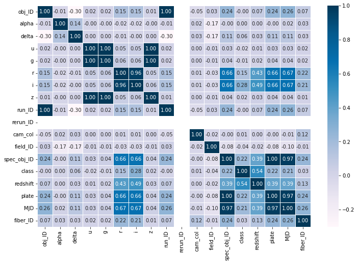
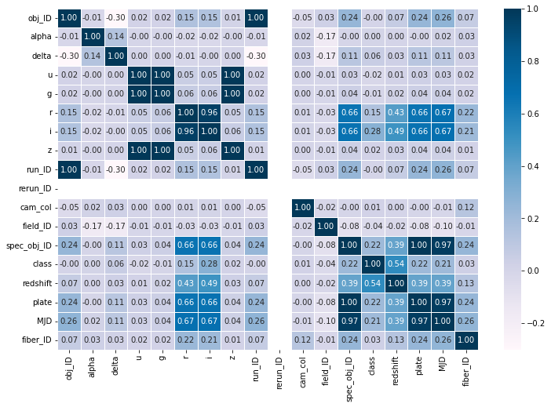

Code
f,ax = plt.subplots(figsize=(12,8))
sns.heatmap(df.corr(), cmap="PuBu", annot=True, linewidths=0.5, fmt= '.2f',ax=ax)
plt.show()
# Helper packages
import imp
import numpy as np
import pandas as pd
import math
import matplotlib.pyplot as plt
# import plotnine
from plotnine import ggplot, aes, geom_density, geom_line, geom_point, ggtitle
import seaborn as sns
# Modeling process
from sklearn.model_selection import train_test_split, KFold, RepeatedKFold, cross_val_score
from sklearn.model_selection import GridSearchCV
from sklearn.cluster import KMeans
from sklearn.neighbors import KNeighborsRegressor, KNeighborsClassifier
import sklearn.metrics
from sklearn.ensemble import RandomForestClassifier
from sklearn.metrics import confusion_matrix, classification_report
from sklearn.preprocessing import StandardScaler
from sklearn.preprocessing import MinMaxScaler
from imblearn.over_sampling import SMOTE #try downsampling
from sklearn import svm
from sklearn.linear_model import LogisticRegression
from sklearn.neighbors import KNeighborsClassifier
from sklearn.compose import ColumnTransformer
from sklearn.compose import make_column_selector as selector
from sklearn.preprocessing import PowerTransformer
from sklearn.pipeline import Pipeline
from sklearn.feature_selection import VarianceThreshold
from sklearn.decomposition import PCA
from mlxtend.feature_selection import sequential_feature_selector as SFS
# deep learning functionality
from tensorflow.keras.utils import to_categorical
from tensorflow.keras.models import Sequential
from tensorflow.keras.layers import Dense, Dropout
from tensorflow.keras.optimizers import SGD
from tensorflow.keras.callbacks import EarlyStopping, ReduceLROnPlateau
from tensorflow.keras import regularizers
from tensorflow.keras import layers
field_ID -0.038044
u -0.017701
g -0.005915
run_ID -0.000049
obj_ID -0.000047
alpha 0.004552
cam_col 0.014476
z 0.017352
fiber_ID 0.032053
delta 0.056643
r 0.150691
MJD 0.207262
spec_obj_ID 0.215722
plate 0.215722
i 0.284396
redshift 0.536822
class 1.000000
rerun_ID NaN
Name: class, dtype: float64from dis import dis
cleaned = df.drop(['obj_ID','run_ID','rerun_ID',"alpha"], axis = 1)
cleaned=cleaned.drop(79543)
# make the X and y varialbes
X = cleaned.drop('class', axis=1)
y = cleaned['class']
display(cleaned)
sm = SMOTE(random_state=42)
X, y = sm.fit_resample(X, y)
X_train, X_test, y_train, y_test = train_test_split(X, y, train_size=0.7, random_state=123)| delta | u | g | r | i | z | cam_col | field_ID | spec_obj_ID | class | redshift | plate | MJD | fiber_ID | |
|---|---|---|---|---|---|---|---|---|---|---|---|---|---|---|
| 0 | 32.494632 | 23.87882 | 22.27530 | 20.39501 | 19.16573 | 18.79371 | 2 | 79 | 6.543777e+18 | 0 | 0.634794 | 5812 | 56354 | 171 |
| 1 | 31.274185 | 24.77759 | 22.83188 | 22.58444 | 21.16812 | 21.61427 | 5 | 119 | 1.176014e+19 | 0 | 0.779136 | 10445 | 58158 | 427 |
| 2 | 35.582444 | 25.26307 | 22.66389 | 20.60976 | 19.34857 | 18.94827 | 2 | 120 | 5.152200e+18 | 0 | 0.644195 | 4576 | 55592 | 299 |
| 3 | -0.402828 | 22.13682 | 23.77656 | 21.61162 | 20.50454 | 19.25010 | 3 | 214 | 1.030107e+19 | 0 | 0.932346 | 9149 | 58039 | 775 |
| 4 | 21.183866 | 19.43718 | 17.58028 | 16.49747 | 15.97711 | 15.54461 | 3 | 137 | 6.891865e+18 | 0 | 0.116123 | 6121 | 56187 | 842 |
| ... | ... | ... | ... | ... | ... | ... | ... | ... | ... | ... | ... | ... | ... | ... |
| 99995 | -2.594074 | 22.16759 | 22.97586 | 21.90404 | 21.30548 | 20.73569 | 2 | 581 | 1.055431e+19 | 0 | 0.000000 | 9374 | 57749 | 438 |
| 99996 | 19.798874 | 22.69118 | 22.38628 | 20.45003 | 19.75759 | 19.41526 | 1 | 289 | 8.586351e+18 | 0 | 0.404895 | 7626 | 56934 | 866 |
| 99997 | 15.700707 | 21.16916 | 19.26997 | 18.20428 | 17.69034 | 17.35221 | 4 | 308 | 3.112008e+18 | 0 | 0.143366 | 2764 | 54535 | 74 |
| 99998 | 46.660365 | 25.35039 | 21.63757 | 19.91386 | 19.07254 | 18.62482 | 4 | 131 | 7.601080e+18 | 0 | 0.455040 | 6751 | 56368 | 470 |
| 99999 | 49.464643 | 22.62171 | 21.79745 | 20.60115 | 20.00959 | 19.28075 | 4 | 60 | 8.343152e+18 | 0 | 0.542944 | 7410 | 57104 | 851 |
99999 rows × 14 columns
# Normalizing approach
yj = PowerTransformer(method="yeo-johnson")
scaler = StandardScaler()
# nzv_encoder = VarianceThreshold(threshold=0.1)
# pca = PCA(n_components=7)
# Normalize all numeric features
preprocessor = ColumnTransformer([("norm", yj, selector(dtype_include="number")),
("std_encode", scaler, selector(dtype_include="number")),
# ("nzv_encoder", nzv_encoder, selector(dtype_include="number")),
# ("pca_encode", pca, selector(dtype_include="number"))
])
#best training data for Random Forest Classifier
tree_X_train= X_train[['delta', 'u', 'g', 'i',"spec_obj_ID", 'redshift', 'plate']]
tree_X_test= X_test[['delta', 'u', 'g', 'i',"spec_obj_ID", 'redshift', 'plate']]
#creating the Random Forest Classifier model with the pre processing steps
r_forest = RandomForestClassifier()
r_forest_pipeline = Pipeline(steps=[
("norm", yj),
("std_encode",scaler),
("r_forest", r_forest),
])
# training the model
r_forest_pipeline.fit(tree_X_train,y_train)
predicted = r_forest_pipeline.predict(tree_X_test)
score = r_forest_pipeline.score(tree_X_test,y_test)
r_forest_pipeline_score = np.mean(score)
r_forest_pipeline_score
c:\Users\user\AppData\Local\Programs\Python\Python310\lib\site-packages\numpy\core\_methods.py:236: RuntimeWarning: overflow encountered in multiply0.9825049999065438 precision recall f1-score support
0 0.97 0.98 0.97 17862
1 1.00 1.00 1.00 17804
2 0.98 0.97 0.98 17835
accuracy 0.98 53501
macro avg 0.98 0.98 0.98 53501
weighted avg 0.98 0.98 0.98 53501
c:\Users\user\AppData\Local\Programs\Python\Python310\lib\site-packages\sklearn\base.py:443: UserWarning: X has feature names, but RandomForestClassifier was fitted without feature namesarray([2, 2, 2, ..., 2, 2, 2], dtype=int64)#feature selection
tsfs=SFS(r_forest_pipeline,k_features=14,scoring=scoring,cv=kfold)
tsfs.fit(X,y)
tsfs.subsets_
#best output
# 7: {'feature_idx': (2, 3, 4, 6, 12, 13, 14),
# 'cv_scores': array([0.98320576, 0.98357025, 0.9836824 , 0.98457958, 0.98340202]),
# 'avg_score': 0.9836880029158606,
# 'feature_names': ('delta','u','g','i','spec_obj_ID','redshift','plate')},TypeError: 'module' object is not callable# Create grid of hyperparameter values
# Number of trees in random forest
n_estimators = [int(x) for x in np.linspace(start = 200, stop = 2000, num = 10)]
# Number of features to consider at every split
# Maximum number of levels in tree
max_depth = [int(x) for x in np.linspace(10, 110, num = 11)]
max_depth.append(None)
# Minimum number of samples required to split a node
min_samples_split = [2, 5, 10]
# Minimum number of samples required at each leaf node
min_samples_leaf = [1, 2, 4]
# Method of selecting samples for training each tree
bootstrap = [True, False]
hyper_grid = {'r_forest__n_estimators': n_estimators,
'r_forest__max_depth': max_depth,
'r_forest__min_samples_split': min_samples_split,
'r_forest__min_samples_leaf': min_samples_leaf,
'r_forest__bootstrap': bootstrap}
grid_search = GridSearchCV(r_forest_pipeline, hyper_grid, cv=kfold, scoring=scoring)
results = grid_search.fit(X_train[["g","i","redshift"]], y_train)
#best training data for Random Forest Classifier
#??
#creating SVM model
svm_clf = svm.SVC(kernel='rbf', C=2, random_state=0)
model_pipeline = Pipeline(steps=[
("norm", yj),
("std_encode",scaler),
("knn", svm_clf),
])
#training SVM model
# model_pipeline.fit(X_train,y_train)
# predicted = model_pipeline.predict(X_test)
# score = model_pipeline.score(X_test,y_test)
# model_pipeline_score = np.mean(score)
# model_pipeline_score
#0.9770.973589278705071# define loss function
scoring = 'accuracy'
# create 10 fold CV object
kfold = KFold(n_splits=5, random_state=123, shuffle=True)
# # fit model with 10-fold CV
# results = cross_val_score(model_pipeline, X_test, y_test, cv=kfold, scoring=scoring)
# results.mean()
#feature selection
svmsfs=SFS(model_pipeline,
k_features=17,
scoring=scoring,
cv=kfold)
svmsfs.fit(X,y)
svmsfs.subsets_NameError: name 'SFS' is not defined#best training data for Logistic Regression
log_X_train=X_train[["delta","u","g","r","cam_col","field_ID","spec_obj_ID","redshift","plate","MJD","fiber_ID"]]
log_X_test=X_test[["delta","u","g","r","cam_col","field_ID","spec_obj_ID","redshift","plate","MJD","fiber_ID"]]
#creating Logistic Regression model
log_reg=LogisticRegression(max_iter=1000,C=4714.85,penalty="l2")
log_reg_pipeline = Pipeline(steps=[
("norm", yj),
("std_encode",scaler),
("log_reg", log_reg),
])
#training Logistic Regression model
log_reg_pipeline.fit(log_X_train,y_train)
predicted = log_reg_pipeline.predict(log_X_test)
score = log_reg_pipeline.score(log_X_test,y_test)
log_reg_pipeline_score = np.mean(score)
log_reg_pipeline_scorec:\Users\user\AppData\Local\Programs\Python\Python310\lib\site-packages\numpy\core\_methods.py:236: RuntimeWarning: overflow encountered in multiply0.9682062017532382c:\Users\user\AppData\Local\Programs\Python\Python310\lib\site-packages\numpy\core\_methods.py:236: RuntimeWarning: overflow encountered in multiply
c:\Users\user\AppData\Local\Programs\Python\Python310\lib\site-packages\numpy\core\_methods.py:236: RuntimeWarning: overflow encountered in multiply
c:\Users\user\AppData\Local\Programs\Python\Python310\lib\site-packages\numpy\core\_methods.py:236: RuntimeWarning: overflow encountered in multiply
c:\Users\user\AppData\Local\Programs\Python\Python310\lib\site-packages\numpy\core\_methods.py:236: RuntimeWarning: overflow encountered in multiply
c:\Users\user\AppData\Local\Programs\Python\Python310\lib\site-packages\numpy\core\_methods.py:236: RuntimeWarning: overflow encountered in multiply0.9693089963642143# Create grid of hyperparameter values
C = np.logspace(-4, 4, 50)
penalty = ['l1', 'l2']
hyper_grid = {'log_reg__C': C,
'log_reg__penalty':penalty,
}
# Tune a Logistic Regression model using grid search
grid_search = GridSearchCV(model_pipeline, hyper_grid, cv=kfold, scoring=scoring)
results = grid_search.fit(X_train, y_train)
results.best_params_
#best output
#C=4714.85
#penalty="l2"from mlxtend.feature_selection import sequential_feature_selector as SFS
#feature selection
sfs=SFS(log_reg_pipeline,
k_features=14,
scoring=scoring,
cv=kfold,
forward=True
)
sfs.fit(X,y)
sfs.subsets_
#best output
# 13: {'feature_idx': ( 1, 2, 3, 4, 5, 7, 8, 9, 10, 11, 12, 13),
# 'cv_scores': array([0.96859842, 0.96991617, 0.96851431, 0.97128999, 0.9696358 ]),
# 'avg_score': 0.9695909384024448,
# 'feature_names': ('delta','u','g','r','i','cam_col','field_ID','spec_obj_ID','redshift','plate','MJD','fiber_ID')}}TypeError: 'module' object is not callable#best training data for K-Nearest Neighbors
knn_X_train=X_train[['g', 'r', 'i', 'z', 'redshift', 'plate']]
knn_X_test=X_test[['g', 'r', 'i', 'z', 'redshift', 'plate']]
#creating the Knn model
knn=KNeighborsClassifier(n_neighbors=3)
knn_pipeline = Pipeline(steps=[
("norm", yj),
("std_encode",scaler),
("knn", knn),
])
#training the KNN model
knn_pipeline.fit(knn_X_train,y_train)
predicted = knn_pipeline.predict(knn_X_test)
score = knn_pipeline.score(knn_X_test,y_test)
knn_pipeline_score = np.mean(score)
knn_pipeline_score0.9730285415225883#feature selection
sfs=SFS(knn_pipeline,
k_features=13,
scoring=scoring,
cv=kfold)
sfs.fit(X,y)
sfs.subsets_
#best output
# {'feature_idx': (4, 5, 6, 7, 13, 14),
# 'cv_scores': array([0.97300025, 0.97330866, 0.97364511, 0.975075 , 0.97473855]),
# 'avg_score': 0.9739535144531359,
# 'feature_names': ('g', 'r', 'i', 'z', 'redshift', 'plate')}, from dis import dis
# cleaned = df.drop(['obj_ID','alpha','delta','run_ID','rerun_ID','cam_col','field_ID','fiber_ID'], axis = 1)
cleaned = df.drop(['u','r','i','z','obj_ID','spec_obj_ID','MJD'], axis = 1)
# cleaned = df.drop(df.filter(regex='ID$').columns, axis=1)
# drop the date column
# cleaned = cleaned.drop(["MJD","plate","cam_col"], axis=1)
cleaned=cleaned.drop(79543)
# make the X and y varialbes
X = cleaned.drop('class', axis=1)
y = cleaned['class']
display(cleaned)
sm = SMOTE(random_state=42)
X, y = sm.fit_resample(X, y)
X_train, X_test, y_train, y_test = train_test_split(X, y, train_size=0.7, random_state=123)
from tensorflow.keras import utils
# y = utils.to_categorical(y)
# y_train = utils.to_categorical(y_train)
# y_test = utils.to_categorical(y_test)
# define the keras model
model = Sequential()
model.add(Dense(units=64, input_dim=20, activation="tanh"))
model.add(Dense(units=64, activation="tanh"))
model.add(Dense(units=32, activation="tanh"))
model.add(Dense(units=3, activation='softmax'))
# compile the keras model
model.compile(
loss='sparse_categorical_crossentropy',
optimizer="rmsprop",
metrics='accuracy'
)
# fit the model
# model.fit(X, y, epochs=20, validation_split=0.2)
model_pipeline = Pipeline(steps=[
("preprocessor", preprocessor),
("model", model),
])
m1=model_pipeline.fit(X_train,y_train, model__epochs=20, model__validation_split=0.2,model__batch_size=32,)galaxy = cleaned[cleaned["class"]==0].drop("class",axis=1)
galaxy_centers = map(lambda a: a/galaxy.shape[0],galaxy.sum())
galaxy_centers= np.array(list(galaxy_centers))
galaxy_centers
STAR = cleaned[cleaned["class"]==1].drop("class",axis=1)
STAR_centers = map(lambda a: a/STAR.shape[0],STAR.sum())
STAR_centers= np.array(list(STAR_centers))
STAR_centers
QSO = cleaned[cleaned["class"]==2].drop("class",axis=1)
QSO_centers = map(lambda a: a/QSO.shape[0],QSO.sum())
QSO_centers= np.array(list(QSO_centers))
QSO_centers